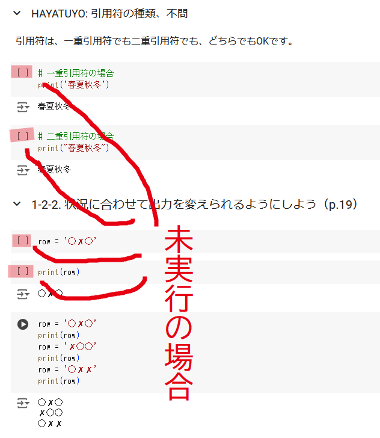
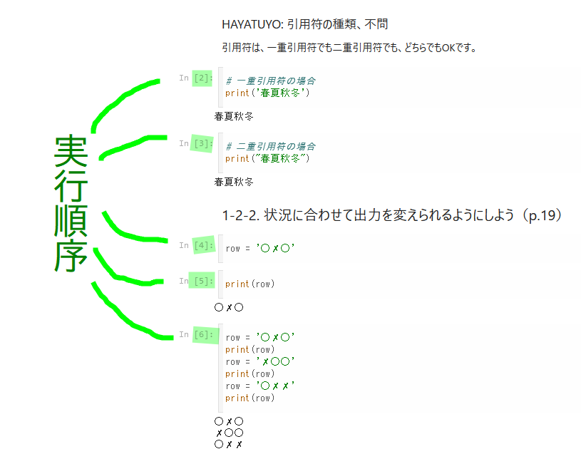
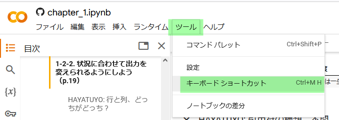

2024/08/21(水) に共有された学びを記しておきます。
1 jupyter でセルを実行するときの注意
google colab に限らず、jupyter のノートブックでは、 セルの間に以下の2つの関係性が存在します。 注意すべきは、この2つが必ずしも一致しないことです。
- 画面に表示される位置関係
- 実行順序の前後関係
この不一致のために、 まだ実行されていないセルが上部にあるのに、 下部のセルを実行してしまい、 実は、上部のセルに下部のセルが依存していて、 「そんな変数は存在しません」というようなエラーが発生してしまうことがあります。
この間違いを防ぐためには、 角括弧で囲まれた番号がセルの左上隅に表示されているかどうかを確認します。
セルが未実行の場合には、角括弧のみが表示され、数字は表示されません。
一方、セルが実行済みの場合には、その実行順序が角括弧で囲まれて表示されます。
2 ショートカット
google colab に限らず、jupyter のノートブックでは種々のショートカットキーが使えます。 （google colab特有のショートカットキーもあるでしょう。）
2.1 ショートカットキーを覚える方針
- 全てを覚える必要はありません。必要なものだけ覚えましょう。
- 何が必要かどうかは貴殿次第です。
- プロジェクトに依るかもしれません。
- お使いのマウスやキーボードの使い勝手に依るかもしれません。
- いきなり暗記する必要はありません。少しずつ覚え、身体化（無意識化）させましょう。
2.2 ショートカットの一覧を表示する方法
ショートカットの一覧を表示方法には、少なくとも、以下の2つがあります。
- ツールバーからメニューを辿る方法
- ショートカットを用いる方法
ツールバーからメニューを辿る方法
ツールバーの「ツール」 → 「キーボードショートカット」の順に選択します。
ショートカットを用いる方法
ショートカットの一覧を表示する機能自体のショートカットもあります。 上のスクリーンショットに「Ctrl+M H」と表示されているのがそれです。
この表示「Ctrl+M H」は以下のように解釈します。
- cntrol キーとアルファベットのm（エム）を同時に押す。
- 押すべきアルファベットのm（エム）は小文字です。下のスクリーンショットでは大文字の「M」が描画されていますが、小文字を押します。
- 一度、全ての指を離します。
- アルファベットのh（エイチ）のみを単独で押す。
- 押すべきアルファベットのh（エイチ）は小文字です。下のスクリーンショットでは大文字の「H」が描画されていますが、小文字を押します。
3 インデント
多くのプログラミング言語では、論理構造の範囲を括弧（丸括弧 や 波括弧）で表現します。
例えば、nodejs（javascript）では、 if の条件文は 丸括弧で囲まれ、条件合致時に処理される内容は波括弧で囲まれます。
一方、Python では 論理構造の範囲をインデントで表現します。
Python以外の多くのプログラミング言語ではインデントの深さ（半角空白文字の数）は不問なので、 他のプログラミング言語に慣れた人ほど、 Python のインデントを患らわしく感じるようです。
しかし、Python は機械学習（いわゆる AI）の実装における デファクトスタンダード（de facto standard）なプログラミング言語なので、 インデント方式が世界中で受け入れられていると言えるかもしれません。
いずれにしろ、インデントの深さを的確に記述することに慣れるしかありません。
だた時間に任せて慣れるだけではなく、以下のような工夫をすることでバグを減らすことができます。
- 制御構文の入れ子を深くしない
- 関数（メソッド）を長くしない
- 自分で編集せず、vscodeなどのエディタ（統合開発環境）に任せる
- インデントの深さ（階層）を可視化させる
それぞれの詳細を記します。
3.1 制御構文の入れ子を深くしない
ifブロック、forブロック、whileブロックなどを組み合わせて入れ子にせざるを得ないこともあると思います。
その場合でも、入れ子の数は最大でも3つくらいに抑えましょう。
それ以上になると、インデントの深さが一瞥（一目）では判読できなくなり、 見間違えて（読み間違えて）、バグに繋がります。
なお、入れ子を深くすると、インデントが横に長く（多く）なるので、 入れ子を深くしないことを、僕は勝手に、『「水平方向」の抑制』と呼んでいます。
3.2 関数（メソッド）を長くしない
2スクロール分、80行
制御構造の開始地点と終了地点が離れすぎてしまい、 制御構造の開始地点がスクリーン（ディスプレイ）の表示範囲外である場合には、 インデントの判読は原理的に不可能です。
そこで、制御構造の行数は、 概ね画面2スクロール分、80行程度に抑えましょう。
2スクロール分ならば、上下に page up または page down することで、 制御構造の全体をパッと見ることができ、 インデントの判読が何とかできるでしょう。
関数の分割
ここまででは制御構造の行数に関して記してきましたが、 実際上は、一般的な制御構造ではなく、 関数（メソッド）の行数を80行程度に抑えましょう。
もし、関数が80行を大きく超えてしまう場合には、 その関数を複数の関数に分割しましょう。
関数に関して、以下のような暗黙の前提をおいているかもしれません。
- 複数、特に巨大な回数、呼ばれるから関数にする
- 複数の箇所から呼ばれるから関数にする
しかし、それらは思い込みにすぎません。
特定の箇所からしか呼ばれなくても、処理を関数にまとめる意義はあります。 呼ばれる回数が少なくても、処理を関数にまとめる意義はあります。 それらの意義とは保守性を高めることなどです。
「水平方向」への副次的効果
また、関数（メソッド）の行数が80行程度に抑えられば、 自然と『「水平方向」の抑制』も効いてくるでしょう。
「垂直方向」の抑制
なお、入れ子を深くしないことを『「水平方向」の抑制』と呼ぶのに対して、 行数の抑制は『「垂直方向」の抑制』と呼ぼうと思います。
3.3 自分で編集せず、vscodeなどのエディタ（統合開発環境）に任せる
最近のエディタを使っているならば、「for i in range(3):」と打ち込んだあとで改行したら、下のように、forよりもインデントを下げた位置にカーソルが移動するはずです。
for i in range(3):
x #←改行後、xの位置にカーソルが自動的に置かれる。また、もしインデントが明らかに間違っていたら、それを警告してくれたり、自動的に修正してくれる機能もあるはずです。 （僕自身があまりVsCodeを活用していないので、希望的予測になっています。）
ゆえに、インデントの調整はまずはそれらの機能に任せ、 手動での調整はその後の微調整と位置付けるべきです。
とはいえ、全く手動での調整が不要になることはなく、むしろ、そこそこ登場します。 なぜならば、論理構造の終了地点で、インデントを浅くする必要があるからです。
for i in range(3):
x = "choco" #←改行後、xの位置にカーソルが自動的に置かれる。
x = "banana" #この行以降は for ブロックの外なので、インデントを浅くする必要がある。なお、インデントを手動で調整するときに押すべきキーは、どのエディタでも、概ね以下の表の通りのはずです。
| 目的 | 押すべきキー |
|---|---|
| インデントを深くする | tab |
| インデントを浅くする | shift + tab |
3.4 インデントの深さ（階層）を可視化させる
3.4.1 拡張機能で可視化する方法
インデントの深さの判読、つまりは半角空白の個数を 目視に頼るのには、読み間違える懸念が残ります。
VsCodeを使っているならば、以下の拡張機能を導入することで、 インデントの背景色を階層ごとに別々の色に塗りわけ、 インデントの深さの判読を助けることができます。
- indent-rainbow - Visual Studio Marketplace

3.4.2 標準機能で可視化する方法
ただし、この拡張機能は導入は簡単ですが、空行には色付けされないという難点があります。 また、VsCode自体も更新されており、インデントの可視化が標準機能に取り込まれているそうです。 その標準機能を有効にするには一手間必要ですが、設定する価値はあると思いますので、下記のブログをご参照ください。
- VS Codeのindent-rainbowは不要になりました！ #VSCode - Qiita
- 虹色のVSCodeでテンション上げて開発する！ | cloud.config Tech Blog